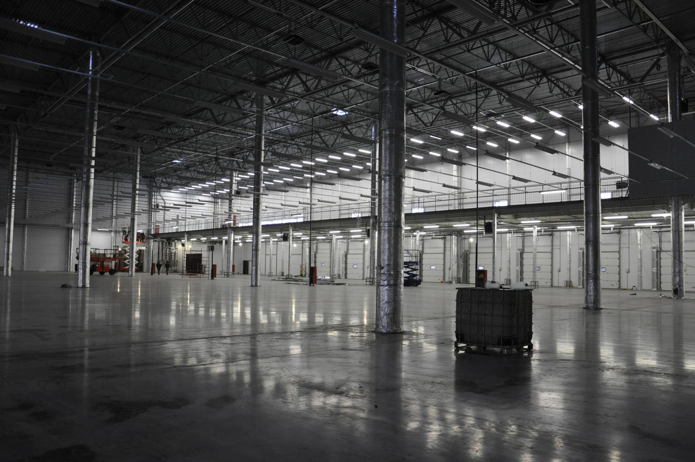
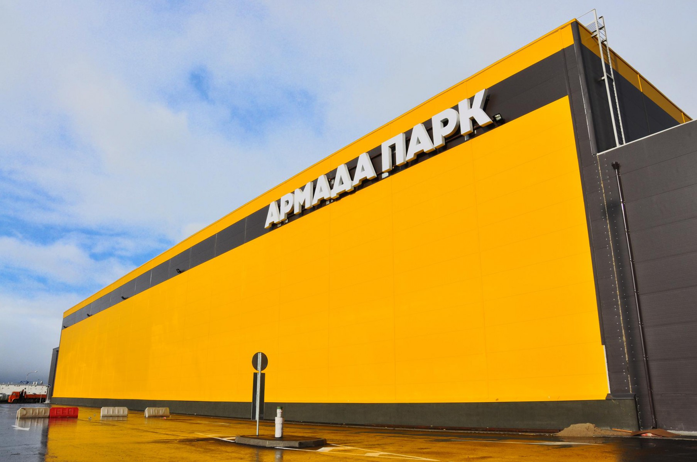
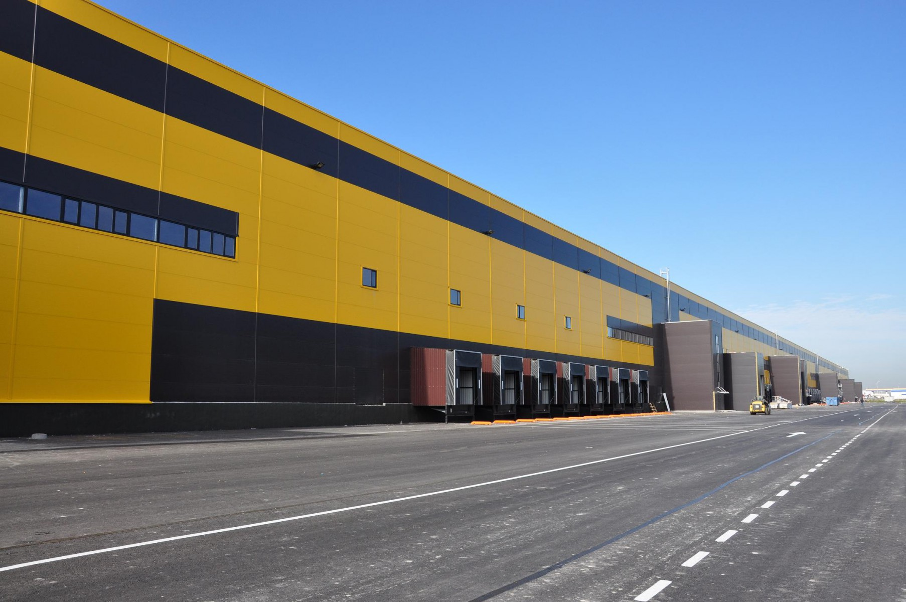

                <section class="common-section object-section select_fanc">
            <div class="common-white-wrap">
                <h1 class="object-title">Складской комплекс «Армада-Парк»</h1>
                <div class="galleria-wrap">
                    <div class="fotorama" data-fit="cover" data-width="1600"
                         data-arrows="true" data-ratio="18/9"
                         data-max-width="100%" data-nav="thumbs"
                         data-thumbheight="64" data-allowfullscreen="true">
                                                    
                                                    
                                                    
                                            </div>
                </div>
                <div class="additional-content-wrap">
                    <p><strong>Сдача объекта:</strong><br/> январь 2015 г.</p>
                    <p><strong>Общая площадь:</strong><br/>75000&nbsp;м²</p>
                    <p><strong>Адрес:</strong><br/> г. Санкт-Петербург, п. Шушары</p>
                </div>
                <div class="main-content-wrap">
                    <p>Складской комплекс «Армада Парк» площадью 75 000 кв.м. (класс «А») расположился в границах развивающейся промышленной зоны Шушары в Пушкинском районе Санкт-Петербурга. Объект расположен непосредственно на Московском шоссе и обладает прекрасной транспортной доступностью, обусловленной близостью КАД, Киевского шоссе, железнодорожной станции «Шушары». В 2017 году планируется открытие новой станции метро «Шушары».</p>
                </div>
            </div>
        </section>
    